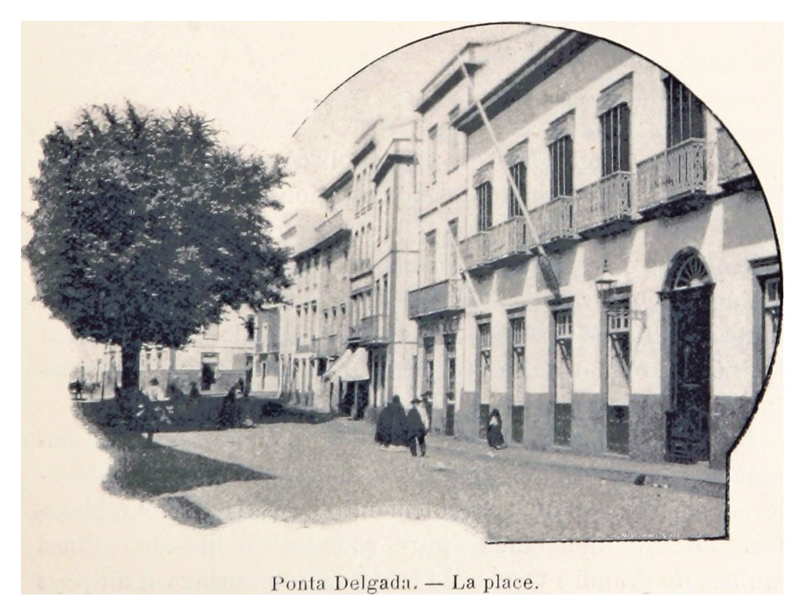
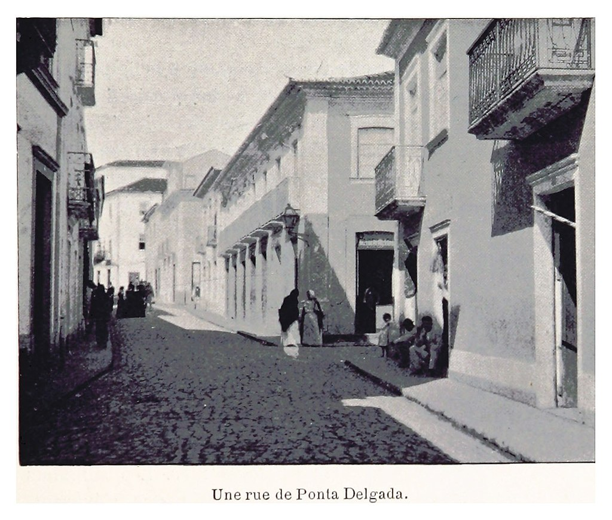

Ponta Delgada is the largest municipality (concelho) and economic capital of the Autonomous Region of the Azores in Portugal. It is located on São Miguel Island, the largest and most populous in the archipelago. As of 2021, it has 67,287 inhabitants, in an area of 232.99 square kilometres (89.96 square miles). There are 17,629 residents in the three central civil parishes that comprise the historical city: São Pedro, São Sebastião, and São José. Ponta Delgada became the region's administrative capital under the revised constitution of 1976; the judiciary and Catholic See remained in the historical capital of Angra do Heroísmo while the Legislative Assembly of the Azores was established in Horta.
II-History:
-The origin of the placename Ponta Delgada (Portuguese for delicate or thin point) was elaborated by the famous Portuguese chronicler, Father Gaspar Frutuoso, who wrote:
This city of Ponta Delgada is named for its situation located along volcanic lands, thin and not too considerable like on other islands, that lead to the sea, and where later, was constructed the chapel of Santa Clara (Saint Clare of Assisi), which was named the Santa Clara point …
In around 1450, Pêro de Teive established a small fishing village that eventually grew into the urban agglomeration in Santa Clara.
Populated since 1444, the island of São Miguel was a vast territory, with small settlements scattered about, except for Vila Franca do Campo in the central-southern coast and the smaller community of Ponta Delgada. Villa Franca had for many years been the center of the island economically and socially and the seat of the local government, but many nobles and landed gentry despised its subordinate status to the government in that town (originating many conflicts between these inhabitants and administrators in the southern coast).[5] The nobles in Ponta Delgada sent a secret contingent, headed by Fernão Jorge Velho, to meet with King Manuel in Lisbon to petition that the community be emancipated. In Abrantes, King Manuel conferred a foral on 29 May 1507, elevating the settlement to the status of the village (Portuguese: vila).
Then, in 1522 an earthquake and landslide devastated the provincial capital, destroying many of the buildings and killing several people. Ponta Delgada became the only centre with an infrastructure to support the Azorean bureaucracy and supplant its important economic links. Quickly, its role changed, and eventually it was elevated to the status of city during the reign of King D. João III by decree, dated 2 April 1546.
The naval Battle of Ponta Delgada (also known as the Battle of São Miguel) took place on 26 July, 1582, off the coast, as part of the 1580 Portuguese succession crisis. An Anglo-French corsair expedition sailed against Spain to preserve Portuguese control of the Azores, which had aligned itself with the pretender António, Prior of Crato, thereby preventing Spanish control (it was the largest French force sent overseas before the age of Louis XIV).
During the 19th century the municipality experienced its greatest boost of economic activity, with the funneling of citrus exports to United Kingdom and the growth of foreign-owned businesses in the historic center, many of them Jewish merchants after 1818.[6] As with other centres across the archipelago, the town of Ponta Delgada experienced many of the trends common for the period, including the "greening" of the communities (with the construction of the gardens of António Borges, José do Canto, Jácome Correia and the Viscount of Porto Formoso, which would become part of the University of the Azores), the construction of many of the ornate homes/estates, the clearing of animals from urban spaces, the opening of newer, larger roadways, the moving of cemeteries to the periphery, and relocation of markets for fish, meat and fruits. Due to these changes, and growth of the mercantile class, Ponta Delgada became the third largest town in Portugal, in economic riches and the number of residents. The poet Bulhão Pato, writing of Ponta Delgada, was surprised by the extraordinary riches of the plantation owners, the "gentlemen farmers" that lived within the urbanized core: exporters of oranges and corn, bankers, investors, industrialists and shippers, all contributing to a privileged class of economic and social thinkers and philanthropists.
At the beginning of the 20th century, Ponta Delgada's position was relatively high (eighth largest), although the changing importance of rural economies steadily chipped away at its growth. But it remained the central place in the economy and hierarchy of the Azorean archipelago. Consequently, it was at the forefront of political change following the Carnation Revolution. In one such event, property owners and right-leaning farmers challenged the Civil Governor António Borges Coutinho, who was responsible, under the direction of the MFA government, to implement land reforms. The Micalense Farmers' Protest, forced his resignation, and inspired a series of terrorist acts that plunged the Azores into political turmoil.After a clandestine round-up of arrests and detentions by the Military Governor, the Autonomous District of Ponta Delgada was extinguished, along with the other districts (Horta and Angra do Heroísmo) on 22 August 1975, with the establishment of the Junta Regional dos Açores (Regional Junta of the Azores), the provisional government that assumed the competencies of the administration during the region's transition to constitutional autonomy.
 
III- Beautiful places:
-1 Panorama of the Sete Cidades Massif, showing the Green and Blue Lakes of the civil parish Sete Cidades